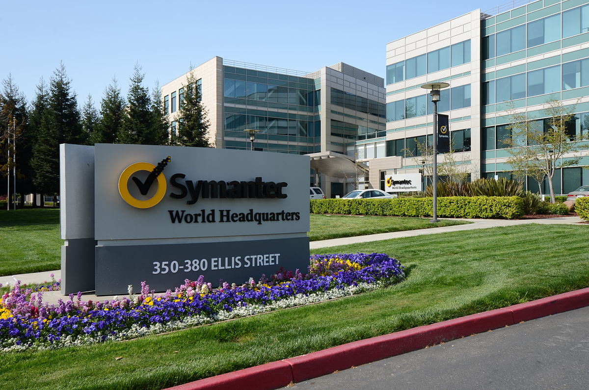

Empresas de cyber security
Saiba mais sobre cada uma delas

Fortinet
Fundada há mais de 20 anos em Sunnyvale, Califórnia, a Fortinet continua a ser uma força motriz na evolução da segurança cibernética e na convergência de rede e segurança. Nossa missão é proteger pessoas, dispositivos e dados em todos os lugares. Para isso, nosso portfólio com mais de 50 produtos de nível empresarial é a maior oferta integrada disponível, oferecendo segurança cibernética comprovada em todos os lugares onde quer você precise. Mais de 755.000 clientes confiam nas soluções Fortinet, que estão entre as mais implantadas, patenteadas e validadas do setor.

Symantec
É a Symantec que produz a linha de produtos Norton. De acordo com o Relatório Symantec sobre Ameaças de Segurança na Internet Volume XIV – a Internet Security Threat Report – só em 2008 foram detectados pela Symantec mais de 1.6 milhões de novos códigos maliciosos. Esse montante equivale a mais de 60% do total de códigos identificados pela Symantec em todos os anos anteriores – uma resposta à rápida proliferação e crescimento do volume de novos ameaças utilizando códigos maliciosos. Essas identificações ajudaram a Symantec a bloquear cerca de 245 milhões de ataques por códigos maliciosos por mês durante 2008 em todo o mundo. Em 2010, o mesmo relatório State of the Enterprise Security indica que 75% das empresas no mundo todo sofreram algum tipo de ciberataque em 2009, o que gerou gastos em média de US$ 2 milhões por empresa. A pesquisa foi feita em janeiro com 2,1 mil empresas em 27 países, sendo 73 empresas no Brasil[4]. A sede da empresa é em Mountain View, Califórnia, sendo que a empresa atua em vários países. A Symantec existiu até 2014. A partir daí, o negócio dividiu-se em dois negócios independentes de segurança digital e gerenciamento de informação. Em 2019, a Broadcom concluiu a compra do negócio de segurança corporativa por US$10,7 bi.

Akamai
Há mais de 20 anos, a Akamai foi estabelecida para resolver o desafio mais difícil do início da Internet: a lentidão na rede mundial. E, desde então, estamos solucionando os desafios mais difíceis da Internet, trabalhando em direção à nossa visão de um mundo mais seguro e conectado. A Akamai Connected Cloud, nossa plataforma de nuvem e edge amplamente distribuída, facilita que as empresas desenvolvam e executem aplicações e cargas de trabalho, enquanto aproximamos as experiências dos usuários e afastamos as ameaças. É por isso que empresas inovadoras em todo o mundo escolhem a Akamai para criar, entregar e proteger suas experiências digitais. Nosso conjunto de serviços líderes em computação em nuvem, segurança e entrega de conteúdo ajudam empresas globais a melhorar a vida de bilhões de pessoas, bilhões de vezes por dia.
Palo Alto Networks
A Palo Alto Networks é uma empresa de cibersegurança com sede em Santa Clara, Califórnia, fundada em 2005. É reconhecida como uma das líderes em soluções de segurança de rede e oferece uma ampla gama de produtos e serviços para proteger empresas contra ameaças cibernéticas. A empresa é mais conhecida por seu firewall de próxima geração, que combina diversas funcionalidades de segurança em uma única plataforma. Além de firewalls, a Palo Alto Networks oferece soluções em áreas como segurança de nuvem, segurança de endpoints, proteção de dados e resposta a incidentes. A empresa investe fortemente em pesquisa e desenvolvimento para aprimorar suas tecnologias e manter-se à frente das ameaças emergentes. A Palo Alto Networks também se destaca pela sua abordagem baseada em inteligência artificial e aprendizado de máquina, o que ajuda a identificar e mitigar ameaças de forma mais eficaz. Com um portfólio robusto e uma base de clientes global, a empresa continua a ser uma força importante no setor de cibersegurança.

Trend Micro
A Trend Micro foi cofundada por Steve Chang, Jenny Chang e Eva Chen em 1988 para desenvolver software antivírus, mas eles não pararam por aí. Nos últimos 30 anos, nos tornamos líderes de mercado em segurança de nuvem híbrida, rede e endpoint. A infraestrutura de TI continua mudando, o comportamento do usuário se torna mais arriscado e as ameaças evoluem. Nós inovamos continuamente para permanecer à frente dos agentes mal-intencionados. Nossos fundadores estabeleceram o tom, a cultura e nosso caminho para a inovação, construindo uma equipe forte de pessoas apaixonadas que trabalham juntas para tornar o mundo seguro para a troca de informações digitais, hoje e no futuro.